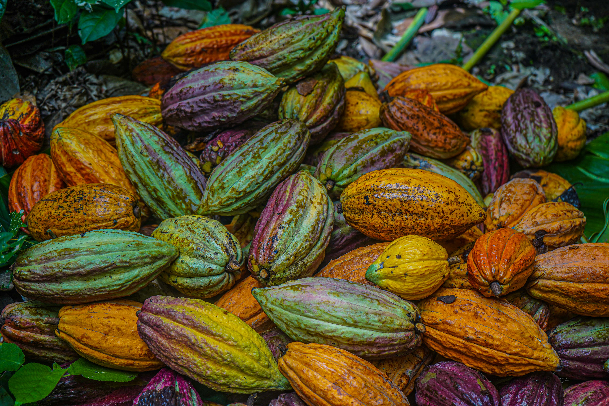
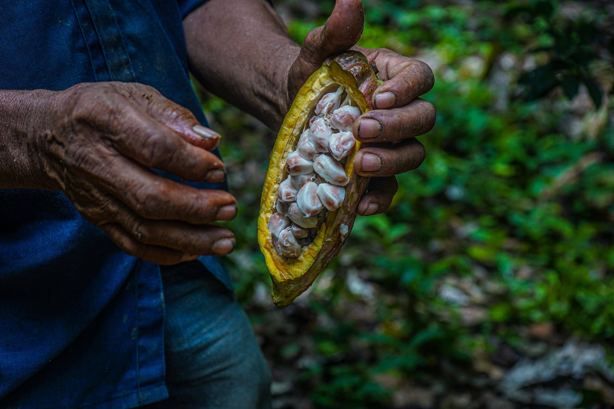
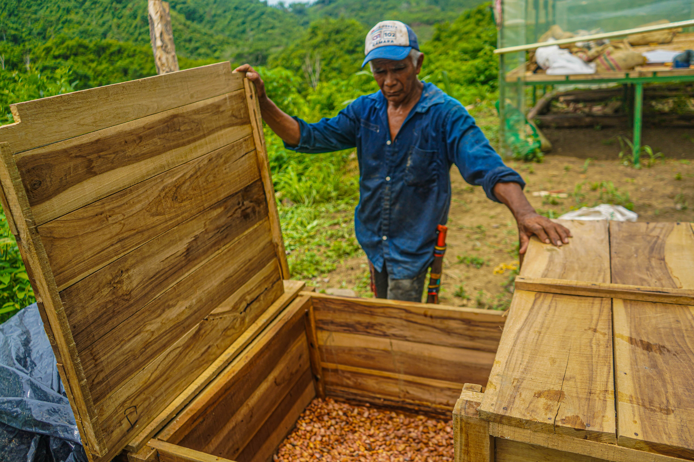

Procesamientos:

- Recoleccion
-
Una vez que el productor sabe que su cosecha esta lista para la recolección, puede comenzar a recolectar las mazorcas de forma manual. Dado que las mazorcas de cacao maduran en diferentes momentos, la recolección mecanica no es posible. Para esto, a menudo se usa un machete o un cuchillo especializado.

- Desgranado
-
El desgrane consiste en partir las mazorcas, lo que por regla general se hace a mano, extrayendo los granos separados de la placenta para colocarlos luego a fermentar. Una forma práctica de realizar el desgrane es golpear la mazorca con un palo o una contra otra, cayendo la parte inferior del fruto, quedando las semillas unidas a la placenta la cual está adherida a la porción proximal de la mazorca, haciéndose a separación de los granos fácilmente con los dedos, deslizándolos a lo largo de la placenta, esto es mucho más eficiente y rápido que cuando la mazorca se parte con el machete, para lo cual se hace necesario sacudir la mazorca para sacar los granos, con el riesgo que se partan los granos por el filo del instrumento.

- Fermentacion.
-
Es esencial para el desarrollo del sabor y la acides final de los granos de cacao. De echo, se ha declarado que, sin la fermentacion, el cacao no tendria ningun sabor.
-
Más bien, las levaduras, las bacterias y las encmimas fermentan la pulpa blanca y jugosa (ó "baba") que rodean los granos de cacao. Los granos sufren los efectos del calor, el ácido y las encimas de la fermentación de la pulpa y estos dan como resultado su transformacion tanto interna como externa.

- Secado de Semilla.
-
Es una etapa del benefico del cacao en la que se elimina el exceso de humedad de los granos por calentamiento y se completa la formacion del aroma y sabor a chocolate. Al finalizar la fermentación del cacao el grano queda con un contenido de humedad de aproximadamente 60% que debe ser reducido hasta un valor próximo de 8% para evitar el desarrollo de mohos que deterioran la calidad y ademas para facilitar el almacenanmiento, trasporte, manejo y comercialización del cacao.